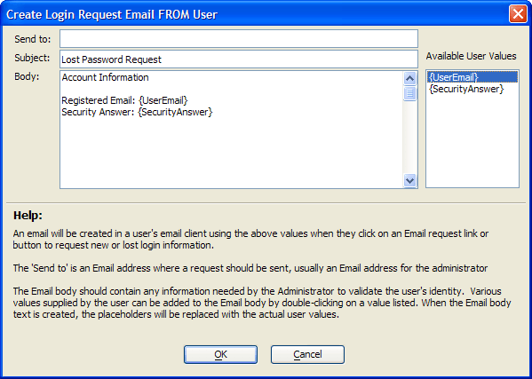

Create Login Request Email FROM User Dialog
The Create Login Request Email FROM User dialog configures the email that will be sent from the user when requesting new or lost login information. Enter text and and {UserID} placeholder into the Body text box control. The application will replace {UserID} with the user's actual user ID when it sends the email.
Enter the email address that will receive user requests into the Send to text box.
Optionally, modify the text in the Subject text box.
Enter text and the {UserEmail} and {SecurityAnswer} placeholders into the Body text box control. The application will replace {UserEmail} and {SecurityAnswer} with the user's email address and security answer when it sends the email.

Limitations
Web publishing applications only.
See Also